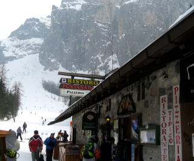
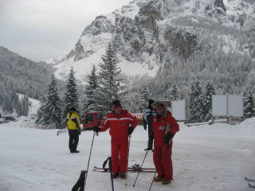
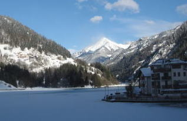
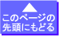

|
|||||||||||||||||||||||||||
|
|||||||||||||||||||||||||||
|
杉山進さんと滑る ドロミティ・スーパースキー |
| 開 催 日 | ２００９年2月２８日(土)〜3月９日(月) | |||
| リーダー | 松澤節夫 | |||
| 報 告 者 | 高井（紀） | |||
| HP制作者 | 高井（紀） | |||
| 参加者数 | １１名 （会員９名、ゲスト２名） | |||
| ここ数年、アルパインスキークラブでは奥志賀で松澤さんがリーダーとなって杉山進さんと滑る会を行ってきた。 その海外編である。 杉山さんは19５６年第7回冬季オリンピック大会(コルチナ・ダンペッツォ大会）に出場された。杉山さんにとっては、思い出多く、熟知している地である。 ドロミティ・スーパースキーは、イタリア北部のオーストリアとの国境近くに位置し、 １２のスキーリゾートからなり、広さ：４５００k㎡、リフト：450基、滑走距離：1200kmの広大なスキーエリアである。 滞在は、旧街道の交差する小さな村（カプリレ）の古い味わいのあるホテルだった。チベッタスキー場から約5kmのところにある。 天候は、残念ながら、３月３日頃から低気圧が居座り、回復しなかったが、寒くなく、雪はたっぷりで、景色に見とれることなくスキーを楽しんだ。 |
| ３月１日 |
| ミラノから５時間かかって前夜１２時頃ホテル到着。 のんびりした後、午後からチベッタで足慣らし。 |
| A | ||
| Hotel alla Posta | カブリレ：ホテル前（標高約980m) |
| A |
 | |
| Allegheのロープウェイ乗り場(標高1000m) チベッタスキー場はここから入る。 |
||
| 昼食のピザを食べたRistoro |
| ３月2日 |
| 今日は、天気も良く、セラロンダに出かけた セラ山塊のまわりにある４つのスキー場を滑って一周すること(ロンダ）でセラロンダといわれている。 スタートはアラッバスキー場。私たちは反時計回りで巡る。 Caprile(8:30)-(バス)--Malga(9:10)--(スキー）--Arabba--(セラ山塊を滑降）--Arabba--Malga(16:30)-(バス)-ホテル(17:15) 沿線距離：73.6km(リフトを含む) 累積標高(-)：約6400m 行動時間；約7.5時間 最高標高：約2400m (GPSの記録) |
| A | ||
| Malgaから正面に見える長いリフト に乗る(1688−2427m) |
リフトから降りたところ |
| A |
| A |
||
| 下のリフトが見えますか？ ゲレンデなんです！ |
Arabbaに着いた。 これからMalgaまでスキーで。 |
| 3月3日 |
| カブリレは雨のため、チベッタで滑る(9:30発〜16:30帰着). 沿線距離：59km 累積標高(-)：5300m 最高標高：約2100m |
| クレーンを使った屋根の雪落とし |
| 3月４日 |
| 天気は雨、雪、曇り。 コルチナエリアまでスキーとバスツアー。 オリンピックコースに挑戦。 Alleghe(8:45)--(チベッタスキー)--Fosca-(バス)-Cinque Turri(スキー)--(バス)--コルチナエリア（スキー） 行きのルートの逆でAllegheへ戻る（16:30)。 沿線距離：59km, 累積標高(-):5900m, 行動時間：6.5時間 最高標高：約2300m |
|  | ＡA | |
| 最上部が１９５６年に杉山さんが滑った オリンピック滑降コースのスタート地点 |
||
| 杉山進さんとガイドのゴットハルトさん |
| ３月５日 |
| 天気は雪 前日の大雪で、ドロミテ最高峰のマルモラーダ(3342m)への道が閉鎖。 この日もチベッタで滑る。 ゴンドラは大混雑だったが、上がると、いつも通り。 新雪をガイドの後について滑る。温度は高く上でも０℃前後。 深く積もった緩い斜面の雪は重くて諦める。 閉鎖されているコースも多くあるが、広いので１日中、ガイドについて滑りまくっても退屈しない。 (10:00〜16：00) |
| これも女性への プレゼント |
夜は杉山さんの旧友で私たちもお世話になった イタロー夫妻との会食 |
プレゼントの帽子 |
| ３月６日 |
| いよいよ、最後の日となり天気に望みを託したが、雪！ マルモラーダの頂上へのゴンドラや、スキー場のリフトは止まっているとのことだった。そのうち天気がよくなればと、マルガへ。 スキーリフト(J-バー)２本のみ。緩い斜面で、レッスンを受ける。 基本が出来ていない者はボロがでるんです。 昼食後，ゴンドラは動かないことが確実になった。 ゴットハルトさんがチベッタで昨日閉鎖されていたコースが開いているというので、 滑り足りない人は再再度、チベッタへ。 満足組みは、お買い物。 チベッタでは、天気も回復し始め、雪も良くご機嫌にリフト終了時間まで滑る。 |
| マルモラーダの頂上へ行くゴンドラ （3/2撮影） |
| 雪崩(人工的),下のリフトはJ-バー | ||
| 子どもたちのスキー教室 | ||
| GPSの軌跡 左：セラロンダ(3/２)、右：コルチナ(3/4) |
| ３月７日 |
| カプリレからミラノへ移動 ようやく、晴れた！！ スキーで堪能できなかった景色をバスの中から楽しんだ。 残念だったけど、まあ、いいか・・。あれだけスキーをしたのだから。 ミラノでの自由時間をドゥオーモやブレラ美術館など各自で観光した。 |
| ＜バスの中から見たカプリレ近郊の景色＞ | ||
|  | A | |
| A | ||
| A |
| ３月８日、９日 |
| ミラノでは、予約が取れていたので、サンタ・マリア・デッレ・グラーツェ教会の食堂にあるレオナルド・ダ・ヴィンチの「最後の晩餐」を見学した。 その後、マルペンサ空港から成田へ、３月９日１０時４０分頃到着。 家に向かいました。 |
| A | ||
| サンタ・マリア・デッレ・グラーツェ教会 | ホテル近くの日曜市 |
| 杉山さんとご一緒できたこと本当に素晴らしいことでした。 グループ全体に温かい雰囲気が漂っていました。 杉山さんの後ろについて滑った人も、ゴットハルトさんのグループで沢山滑った人も、それぞれ楽しんでいました。スキー場でのランチ、ホテルでの夕食は美味しかったし、杉山さん初め皆さんの幅広い知識を持った会話が加わり、一層奥深いスキー旅行になりました。 最終日になってしまいましたが、ドロミテの空の青さと雪を被った壮大な岩山の美しさを垣間見れたことで満足しました。 また、機会があれば・・・・ |
|  |